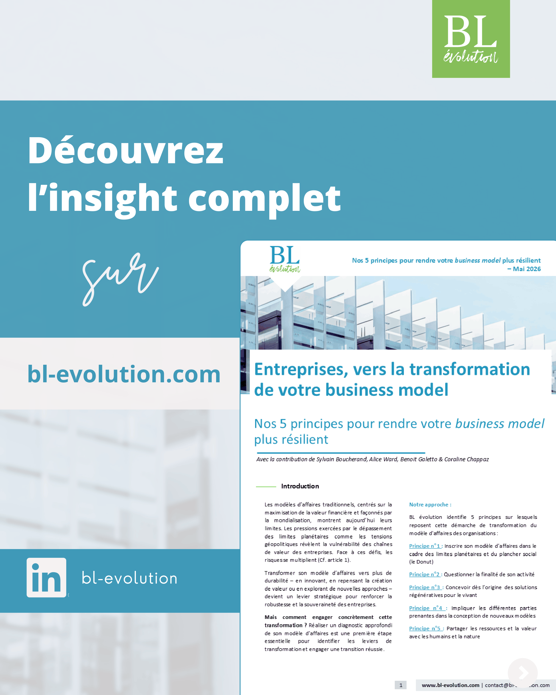

Communication digitale
Stratégie éditoriale, rédaction, campagnes, newsletters, contenus web et communication institutionnelle.
Étudiant en Master 2 Information et Communication à l’Institut Catholique de Paris, je développe des projets mêlant stratégie éditoriale, création visuelle, social media, photographie et analyse des usages numériques.
Disponible pour un stage de 6 mois à partir de janvier 2027

À propos
Mon travail se situe au croisement de la communication digitale, de la création visuelle et de l’analyse des médias numériques.
J’ai développé mon expérience en France et à l’international auprès d’organisations comme BL évolution, UNICEF Burundi, WARESA, BUJAHUB et la Fondation Lucien Paye.
J’aime particulièrement transformer des sujets complexes en contenus accessibles, trouver le bon angle éditorial et construire des formats adaptés aux publics auxquels ils s’adressent.
Consulter mon CV complet ↗Expertise
Stratégie éditoriale, rédaction, campagnes, newsletters, contenus web et communication institutionnelle.
Création de contenus, animation des réseaux sociaux, calendrier éditorial, reporting et analyse des performances.
Carrousels, infographies, affiches, newsletters, photographie, présentations et montage vidéo.
Analyse des usages numériques, veille, nouveaux médias, méthodologies de recherche et analyse de contenus.
Expérience
Responsable de la newsletter
Planification éditoriale, coordination des contributeurs, création de visuels, préparation et diffusion de la newsletter et suivi des résultats.
Stagiaire Communication & Graphisme
Création de contenus éditoriaux et visuels, articles web, carrousels LinkedIn, infographies, supports commerciaux, campagnes, webinaires et communication événementielle.
Stagiaire professionnel en Communication
Rédaction d’articles et contenus digitaux, couverture photographique d’activités de terrain, publications social media et appui aux campagnes de sensibilisation.
Communication & Design
Création de supports graphiques, campagnes événementielles, contenus social media et déclinaison de l’identité visuelle de l’organisation.
Stagiaire Communication
Création de contenus, animation des réseaux sociaux, photographie d’ateliers et participation à la stratégie de communication du hub.
Portfolio
Communication éditoriale, infographies, campagnes digitales, photographie, communication événementielle : cette sélection présente différents formats réalisés au cours de mes expériences.
BL évolution · Paris
Contenus éditoriaux, carrousels LinkedIn, infographies, campagnes, webinaires et supports événementiels.

Création de contenus visuels destinés à rendre plus accessible l’évolution du standard Net-Zero : carrousel, infographies et hiérarchisation d’informations techniques.


Déclinaison de contenus pour expliquer et valoriser les enjeux de la VSME.

Conception d’un carrousel pédagogique adapté aux usages LinkedIn.

Création de visuels pour ateliers, communication événementielle et réseaux sociaux.

Supports graphiques et communication digitale autour d’un cycle de webinaires.

Traduction graphique de contenus techniques autour des enjeux d’adaptation.

Mise en forme éditoriale et visuelle d’insights destinés aux entreprises.
UNICEF Burundi
Production de contenus web et social media, couverture d’activités de terrain et valorisation de programmes en faveur des enfants et des communautés.

Photographie et storytelling autour d’un programme favorisant l’innovation et l’apprentissage par la pratique.

Contenu institutionnel autour de l’intégration d’outils numériques dans le système de santé.

Reportage destiné à valoriser l’amélioration des conditions d’apprentissage des élèves.
Photographies sélectionnées parmi mes productions réalisées dans le cadre de mon stage à UNICEF Burundi.
WARESA
Création de supports pour conférences, awards, campagnes internationales et communication social media.


BUJAHUB · Bujumbura
Création de contenus, couverture d’ateliers, photographie et animation des plateformes digitales du hub.


Fondation Lucien Paye · CIUP
Création de visuels, structuration éditoriale et promotion d’événements culturels et communautaires.


Recherche
Une recherche consacrée aux usages numériques, à la circulation de l’information et aux formes de participation citoyenne des jeunes.
Compétences & outils
Certifications
UNICEF
D-Clic · Organisation internationale de la Francophonie
World English Institute
Contact
Je recherche un stage de 6 mois à partir de janvier 2027 et reste ouvert aux collaborations, projets de communication et opportunités créatives.
Télécharger mon CV ↓